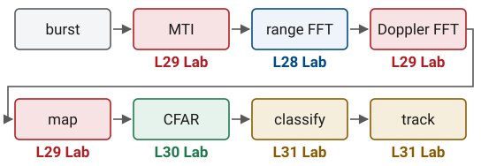
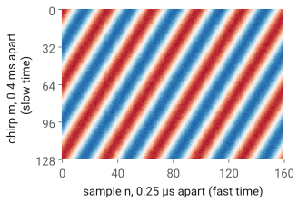
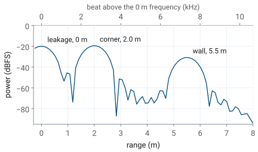
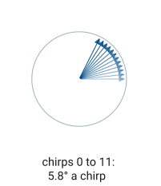
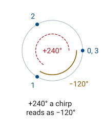
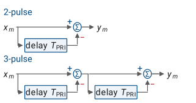
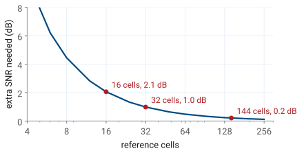
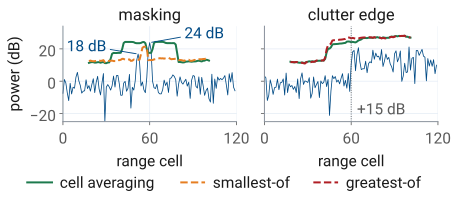
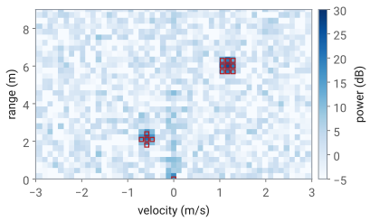
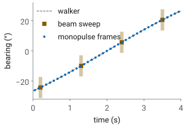

Radar Overview 2 - Doppler, MTI, CFAR, and the Lab Chain#
Doppler, MTI, CFAR, and the Lab Chain
A burst of chirps measures velocity, MTI removes clutter, and CFAR sets the threshold.
Radar Overview 2 · Antennas, Phased Arrays, and Radar Systems · Dr. Neil Rogers
Printing
To print the slides, switch to present mode and print: one slide a sheet, with room for notes. Print from read mode for the whole lesson.
Learning Objectives
- I can process FMCW radar data to produce range, range-waterfall, and range-Doppler results.
- I can apply moving target indication (MTI) processing to distinguish moving targets from clutter.
- I can apply constant false-alarm rate (CFAR) processing to radar data and evaluate detection performance.
- I can integrate FMCW radar processing with a phased-array front-end to track a moving target.
- I can classify a detected target from its micro-Doppler signature and report the classifier's accuracy.
Overview 1 ended with one chirp, one FFT, and one range profile. This overview follows the rest of the processing chain that the L29–L31 Labs run. The course provides every stage in the Phaser app and in radar_lab.py, so the aim here is to know what each stage is for, where it sits in the chain, what its output looks like, and what each of its settings does. Each frame links to the lesson that derives it.
The Processing Chain

The first row and the map are the L28 and L29 Labs.
CFAR then tests every cell of the map.
The detections feed a classifier and a tracker.
The figure is the whole chain, with the lab that adds each stage. The radar sends a burst of chirps. MTI, when it is on, subtracts successive chirps to remove returns that do not move. The range FFT of Overview 1 turns each chirp into a range profile, and a second FFT across the chirps measures velocity in every range cell. The next frame names the axis each of these stages works along. The result is the range-Doppler map. Two more stages follow the map: CFAR decides which cells hold a target, and the L31 Lab classifies and tracks what CFAR reports. We take the stages in the order the labs do: the map first, then MTI, CFAR, classification, and tracking.
The Radar Data Cube

Fast time runs along one chirp; its FFT gives range.
Slow time runs across the \(M\) chirps, one every \(T_\text{PRI}\); its FFT gives velocity.
Channel is the kit’s two subarrays; comparing them gives angle.
One chirp lasts a fraction of a millisecond, which is too short to measure the velocity of anything in a room. To observe a target for longer, the radar repeats the chirp. The examples today use the teaching burst of Lesson 29, which no preset in the app uses: \(M = 128\) chirps of 400 MHz at 10.0 GHz, one every pulse repetition interval \(T_\text{PRI} = 0.4\) ms, so the burst lasts 51.2 ms.
The samples of one burst form the radar data cube, and each processing stage works along one of its axes. Fast time is the samples within one chirp, a row of the cube; the range FFT of Overview 1 runs along it. Slow time is the same sample of every chirp, one \(T_\text{PRI}\) apart, a column of the cube; MTI and the Doppler FFT run along it. The third axis is the receive channel. The PHASER’s eight elements reach the receiver as two subarrays, so the cube is two channels deep, and comparing the two gives the angle of a target, which the tracking frame uses.

The figure above is one channel’s slice of the cube for a hand at 1.5 m closing at 0.6 m/s. Across a row the beat oscillates at the rate that gives the hand’s range. Down a column, the same sample of every chirp oscillates slowly, and that slow oscillation measures the hand’s velocity. Every chirp has to start at the same point of its ramp for the columns to line up, and the PHASER’s chirp synchronization does that.
Range FFT Along Fast Time

Each target puts one steady beat tone in a chirp; several targets sum.
The range FFT, along fast time, splits the sum. Each frequency bin is a range bin.
One chirp gives one range profile: a peak per target.
The first FFT runs along fast time, within one chirp. Overview 1 showed that a target at range \(R\) puts one steady tone in the chirp, the beat at \(f_b = 2BR/(cT_s)\). Several targets at several ranges each add their own tone, so the samples of one chirp are a sum of tones. An FFT splits a sum of tones into its frequencies. Each frequency bin of that FFT is a range bin, because the beat is proportional to range.
The result is a range profile: one chirp becomes one plot of power against range bin, with a peak for every target, not a single range. The figure is the range profile from Overview 1, with three peaks for three things in the room: the leakage, a corner reflector, and the wall. The radar takes the range FFT of every chirp in the burst, so the rows of the data cube stay chirps and its columns become range bins. Lesson 28 covers the range FFT.
Doppler FFT Along Slow Time

A target stays in one range bin, but its phase steps equally every chirp.
A steady phase step is a tone in slow time, at \(f_D\).
The Doppler FFT, down each range column, finds it. Its bin is the velocity.
The second FFT runs along slow time, down one range column of the range FFT’s output. From chirp to chirp a target stays in the same range bin: at 1 m/s it moves 0.4 mm in one 0.4 ms interval, against a range bin of 0.375 m. Its range changes far too little to move it to another bin, but the phase of its bin is the round trip measured in wavelengths,
so a fraction of a millimeter changes the phase measurably. A target closing at \(v\) is \(v\ T_\text{PRI}\) nearer at each chirp, so its phase steps by the same amount \(\Delta\phi = 4\pi v T_\text{PRI}/\lambda\) every chirp. A steady phase step is a tone in slow time, and its frequency is the Doppler shift \(f_D = 2v/\lambda\) of Lesson 26. The Doppler FFT down the column finds that tone, and the bin it lands in is the target’s velocity. A closing target has a positive Doppler shift and an opening target a negative one. A wall does not move, so its phase does not step, and it lands in the 0 m/s bin.
For the hand closing at 0.6 m/s at a 3.0 cm wavelength, the shift is 40 Hz, and over one 0.4 ms interval the phase steps
The figure draws those steps for the first twelve chirps. Lesson 29 has the details.
The Two FFTs, Step by Step
The widget runs the last two frames on one small burst with three targets: a wall at 3.0 m, a target at 1.5 m closing at 4.7 m/s, and a target at 4.5 m opening at 3.5 m/s. Play step animates the next step, and Next and Back jump between the finished steps.
The burst is idealized so that every step is easy to see. It keeps 32 of the teaching burst’s 128 chirps and shows the first 16 range bins, each target sits at the center of a bin, and there is no noise. A measured map has a noise floor, and each target spreads over a few cells.
With 32 chirps the velocity bin is
four times as coarse as the full burst’s 0.29 m/s, so the closing target is 4 bins from zero and the opening target 3. The closing target’s Doppler shift is 312 Hz and the burst lasts 12.8 ms, so its range cell turns through four cycles in the third step. The widget draws its map with range across and velocity up; the next frame’s figure is the same map turned 90°.
The Range-Doppler Map

The range-Doppler map is both FFTs: range on every chirp, then Doppler down every range column.
Frequency within a chirp is range; phase change across chirps is velocity.
The wall is at 0 m/s; the hand at +0.6 m/s.
The radar takes the range FFT of every chirp, and then the Doppler FFT down every range column of the result. Together the two passes are a two-dimensional FFT of the burst, and the result is the range-Doppler map: range on one axis, radial velocity on the other, and the power in each cell as the color. The figure is a map of the teaching burst for a scene like the one in the L29 Lab. The kit’s leakage at 0 m and a wall at 2.9 m do not move, so both are in the 0 m/s column, and they are the strongest returns on the map. The hand at 1.5 m is at +0.6 m/s, about 30 dB below the leakage. A fidget spinner at 2.1 m has arms that move toward and away from the kit, so it spreads over a band of velocities at one range.
Positive velocity is closing. The spinner’s spread is taken up on the classification frame. The Doppler FFT is also the coherent integration of Overview 1: it adds the \(M\) chirps in phase for a target at each velocity. Lesson 29 describes the map and where its range cells fall.
Velocity Cell and Limit

More chirps make the velocity cell finer.
A shorter \(T_\text{PRI}\) raises the limit.
Past \(v_\text{max}\) a target aliases: +25 m/s reads as −12.5 m/s.
The Doppler FFT observes each range cell for the length of the burst, \(M\ T_\text{PRI}\), so it separates Doppler tones that differ by \(1/(M\ T_\text{PRI})\). Multiplying by \(\lambda/2\) converts that to the velocity cell \(\Delta v\). The burst samples the phase once every \(T_\text{PRI}\), so the FFT distinguishes only Doppler shifts within \(\pm 1/(2T_\text{PRI})\), which gives the velocity limit \(v_\text{max}\). A velocity cell is one bin of the Doppler FFT, as a range cell is one bin of the range FFT. On the teaching burst,
That limit is the unambiguous velocity of Lesson 26, with the chirp rate as the PRF.
A target faster than the limit aliases, and the circle shows why. At +25 m/s the phase advances 240° a chirp. A step of +240° and one of −120° reach the same point on the circle, so the FFT reads them as the same phase step, and the map reports −12.5 m/s.

Each setting of the burst controls one axis of the map, and the figure above shows the hand’s spot for three bursts: with 32 chirps instead of 128 it is four times as wide in velocity, and with a 160 MHz chirp it is taller in range. The number of chirps sets the velocity cell, the interval between chirps sets the velocity limit, and the bandwidth sets the range cell, \(c/2B\), which is 0.375 m for 400 MHz. Lesson 29 works the cases.
Clutter and MTI
![The range-Doppler map of the teaching burst three times, with one color bar in dB relative to the leakage: with no MTI, with the 2-pulse canceller, and with the 3-pulse canceller, the leakage, wall, hand, and spinner labeled in the first. With either canceller the leakage at 0 m and the wall at 2.9 m drop to the noise floor. The hand at plus 0.6 m/s is fainter with the 2-pulse canceller and drops below the color scale with the 3-pulse, together with the floor around it. The spinner's outer lines survive and its center is removed](../../viz/img/L29-mti-maps.svg)
Clutter, the returns that do not move, is at 0 m/s. MTI (moving target indication), a filter along slow time, drops it to the noise floor.
MTI also weakens slow targets: the hand at 0.6 m/s loses 20.0 dB.
The leakage, the walls, the table, and the stand return the same echo on every chirp. Radar engineers call these returns clutter. On the map they are at 0 m/s, and in a lab room they are the strongest returns: the leakage is 30 dB above the hand. Clutter hides slow targets, because its sidelobes in Doppler spread onto the velocities near zero, and it raises a CFAR threshold computed from the cells beside it.
Moving target indication (MTI) removes the clutter. The figure is the same scene with MTI off, with the 2-pulse canceller, and with the 3-pulse canceller, on one color scale. With either canceller the leakage and the wall drop to the noise floor. The hand at 0.6 m/s is fainter with the 2-pulse canceller and fainter still with the 3-pulse, and the spinner keeps the lines of its fastest arms and loses its center. Lesson 29 covers the three maps.
Pulse Cancellers

The 2-pulse canceller subtracts the previous chirp from each, so a fixed return cancels.
The 3-pulse canceller subtracts twice.
A hand at 0.6 m/s loses 20.0 dB (2-pulse) or 39.9 dB (3-pulse), and so does its noise.

The block diagrams show both cancellers. The 2-pulse canceller subtracts the previous chirp from each chirp, sample by sample, before the FFTs. A stationary return is the same in both chirps, so it subtracts to zero. A moving target’s phase has advanced between the two chirps, so some of it survives, and the faster the target, the more survives. The 3-pulse canceller applies the same subtraction twice in a row, which removes more of everything near 0 m/s.
A canceller is a filter with a notch at 0 m/s, and a slow target is inside the notch. The plot is the gain of each canceller against velocity on the teaching burst, with dots at the hand’s 0.6 m/s: the hand loses 20.0 dB through the 2-pulse canceller and 39.9 dB through the 3-pulse. The noise in the hand’s own velocity cell passes through the same filter, so the hand stands as high above its own floor as before, but it is lower on the map’s color scale, and in the 3-pulse map of the last frame it drops off the scale. The gain is also zero at the blind speeds, every 37.5 m/s on this burst, which nothing in the labs reaches. In the app, the MTI setting chooses off, 2-pulse, or 3-pulse. Lesson 29 gives the canceller’s gain at every velocity.
Range-Doppler Explorer
The widget computes a map from the teaching burst: leakage at 0 m, a wall at 2.9 m, and a hand at 1.5 m whose closing speed we set, beside the canceller’s gain against velocity. Change the number of chirps, and the hand’s spot narrows or widens in velocity. Move the hand past +18.75 m/s, and it aliases. Turn chirp sync off, and the hand’s energy spreads over the whole velocity axis. Then step through the MTI settings at a slow and a fast hand speed.
CFAR: A Threshold From the Neighbors

CFAR (constant false-alarm rate) detection sets each cell’s threshold from its neighbors.
Reference cells estimate the noise; guard cells keep the target out of the estimate.
The threshold is the estimate times a bias.
Overview 1 set the threshold from \(P_{fa}\) and a known noise power, and showed that 3 dB more noise under a fixed threshold raises the false alarms a thousand times. Constant false-alarm rate (CFAR) processing measures the noise instead of assuming it. The detector tests one cell at a time, the cell under test. On each side it skips a few guard cells, because a target’s peak spreads into its neighbors, and then it averages a block of reference cells. That average is the estimate of the noise power at this cell, and the threshold is the estimate multiplied by a bias. The window then moves one cell and the detector repeats the test, so every cell has a threshold computed from its own neighbors. Where the noise is higher, the estimate and the threshold are higher by the same factor. Lesson 30 has the details.
The Bias and the False-Alarm Probability
\(P_{fa}\) depends on \(\alpha\) and \(N\), not on the noise power.
\(P_{fa} = 10^{-6}\) with \(N = 32\) takes 12.4 dB; known noise took 11.4 dB.

Fewer reference cells need more SNR: 2.1 dB at 16, 1.0 dB at 32.
With \(\hat{P}_n\) the average of the \(N\) reference cells, the threshold is \(T = \alpha\hat{P}_n\). The bias \(\alpha\) is the number we choose, and it sets the probability of false alarm. The noise power does not appear in the expression for \(P_{fa}\), which is what “constant false-alarm rate” means: the false alarms stay at the design value wherever the noise level is.
For \(P_{fa} = 10^{-6}\) and 32 reference cells the bias is 17.3, or 12.4 dB. Overview 1’s threshold for the same \(P_{fa}\) with the noise known was 11.4 dB. The extra 1.0 dB comes from estimating the noise from a finite number of cells: the estimate scatters, and a higher bias covers the times it comes out low. The figure shows what that estimate takes from detection: for \(P_d = 0.9\) a target needs 1.0 dB more SNR with 32 reference cells and 2.1 dB more with 16. More reference cells bring the bias closer to 11.4 dB, but a wider window is more likely to reach cells where the noise is at a different level.
The three controls each do one thing. A higher bias gives fewer false alarms and fewer detections of weak targets. More guard cells keep a wide target out of its own estimate. More reference cells steady the estimate and make it less local. Lesson 30 derives the bias.
CFAR Explorer
The widget draws one range profile of 240 cells with the CFAR threshold over it in green. Cells from 168 on hold clutter 15 dB above the quiet noise, and triangles along the top mark five targets, dark when found and pale when missed. Noise crossings are red dots, and the widget counts them as false alarms. Start at 2 guard and 16 reference cells a side with a 12.4 dB bias. Set the guard cells to 0, and each target raises its own threshold. Lower the bias until false alarms appear. Then switch the method to greatest-of and smallest-of, which the next frame covers.
Greatest-Of and Smallest-Of

A strong target in the window hides a weaker one. Smallest-of keeps the lower side’s average and finds it.
A clutter edge mixes two noise levels. Greatest-of keeps the higher side’s average and holds \(P_{fa}\).
Cell averaging assumes every reference cell holds noise at the same level as the cell under test. The figure shows the two common ways that fails. On the left, an 18 dB target is eight cells from a 24 dB target. The stronger target is inside the weaker one’s reference window, it raises the average, and the threshold rises above the weaker target. This is masking. On the right, the noise rises 15 dB at the edge of a clutter region, and a window that straddles the edge averages two noise levels: the threshold is too high just before the edge and too low just past it.
Both variants average the two sides of the window separately and keep one. Smallest-of keeps the smaller, so a second target on one side does not raise the threshold. Greatest-of keeps the larger, so a cell just inside the clutter has a threshold set by the clutter. Each fixes one failure and worsens the other. Lesson 30 compares the three.
Detections From the Map

On the map the window is a guard box inside a reference ring.
Each detection is a range, a velocity, and an SNR.
One target gives a cluster of detections.
Without MTI, CFAR reports the 0 m/s clutter as targets.
The range-Doppler map has two axes, so the CFAR window does too: the guard cells are a box around the cell under test, and the reference cells are the ring around that box. The figure is a simulated map after MTI, with a walker at 6.0 m and a hand at 2.1 m. The red squares are the cells CFAR declares. Each target produces a cluster of detections, because its peak spreads into the cells beside it, and the notebook reduces each cluster to its strongest cell. The output is a list of detections, each with a range, a radial velocity, and an SNR.
Without MTI, the clutter at 0 m/s is a ridge along the map. To the CFAR window that ridge is a clutter edge, and CFAR reports its cells as targets. MTI removes most of the ridge before CFAR runs, and the one square at 0 m in the figure is clutter the canceller left. Lesson 30 covers the two-dimensional window.
Classification by Micro-Doppler
Micro-Doppler is the Doppler of a target’s moving parts.
The walker, fan, spinner, and hand each draw a different pattern of velocity against time.
A classifier names the target from features of that pattern.

A detection says that something is at a range and a velocity. It does not say what the target is. The parts of a target that move relative to its body, a rotor’s blades or a walker’s arms and legs, each have their own Doppler shift, and that is micro-Doppler. A spectrogram shows it: the Doppler FFT of one range cell taken in short windows, one after another, so that velocity is on one axis and time on the other.
The figure is the spectrogram of four example targets. A walker shows a line at the torso’s speed with the limbs swinging about it once a stride. A fan shows a steady band out to the speed of its blade tips. A spinner’s band is strongest near its tips (this one is a larger example than the spinner on the map, with tips at 4.7 m/s), and a waved hand draws one trace that swings through zero. The L31 Lab measures three features of each spectrogram, such as how wide the band is and how strongly it repeats, and a classifier assigns the class whose stored features are nearest. You then count how often it is right. Lesson 31 covers the signatures, the features, and the classifier.
Tracking in Range and Angle


The alpha-beta filter predicts the range, then corrects toward the detection.
At \(\alpha = 0.15\) the track is smoother but lags the turn 0.9 m.
Monopulse compares the two channels for the angle every 0.1 s; a sweep looks every 1.1 s.
A detection list is noisy: each range is the center of a range cell, and some bursts miss the target. A track joins one target’s detections into a single estimate of its range and velocity, burst after burst. The alpha-beta filter is the simplest tracker. After each burst it predicts where the target should be from its last estimate, compares the prediction with the new detection, and corrects the range by a fraction \(\alpha\) of the difference and the velocity by a fraction set by \(\beta\). In the first figure a walker goes out and back. The track with \(\alpha = 0.4\) follows the walker through the turn, and the track with \(\alpha = 0.15\) is smoother but lags the turn by up to 0.9 m.
Range comes from the FMCW processing, and angle comes from the array. Monopulse, from the L24 Lab, compares the phases of the two subarray channels, the third axis of the data cube, in the detection’s own cell, so it gives the angle in one look, with no beam sweep. The second figure is the bearing of a walker crossing the room. A beam sweep looks every 1.1 s, and the walker leaves its 13.6° beam between looks; monopulse measures the angle on every burst, 0.1 s apart on Lesson 31’s example burst, and follows the walker. Lesson 31 covers both.
Four Labs, One Report
Lab |
What it adds |
|---|---|
L28 |
range profile and waterfall |
L29 |
range-Doppler map, MTI |
L30 |
CFAR detections |
L31 |
classification and tracking |
Each lab starts from the lab before it.
The report explains the whole chain in your own words.
The four labs are one processing chain, built a stage at a time. The range FFT of the L28 Lab is the first step of the L29 Lab’s range-Doppler map, the L30 Lab runs CFAR on those maps, and the L31 Lab classifies and tracks what CFAR detects. The course provides the chain in the Phaser app and in radar_lab.py; you run it, change its settings, and explain what you see. Keep your captures, notebooks, and plots from every lab in one folder, because each lab uses the ones before it.
Each lab has a packet: you predict before class, measure in class, and analyze afterward. The packets are not the report. The final project is one report on the radar as a system, and I grade it on your explanation of why your results came out as they did.
Looking Ahead
Before each lab, read the lesson half of its page and do Part 1 of its packet.
The L28 Lab is first: it measures the 0 m frequency, the range to a target, and a walk on the range waterfall.